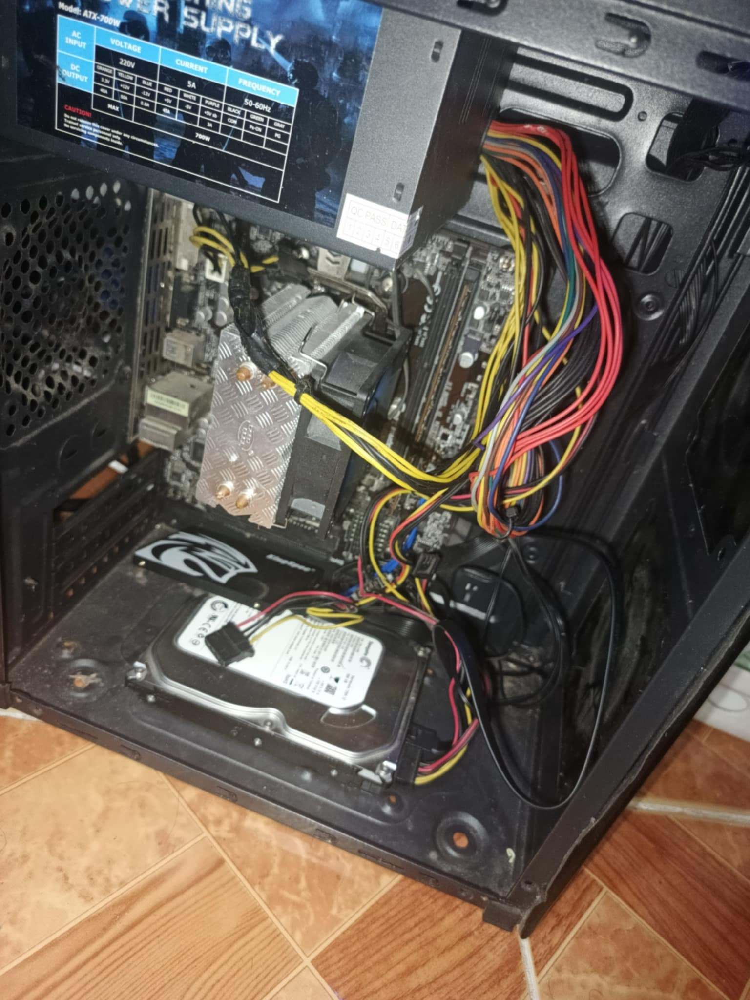
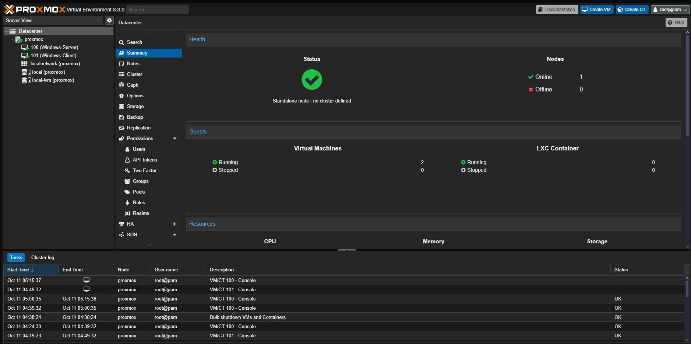
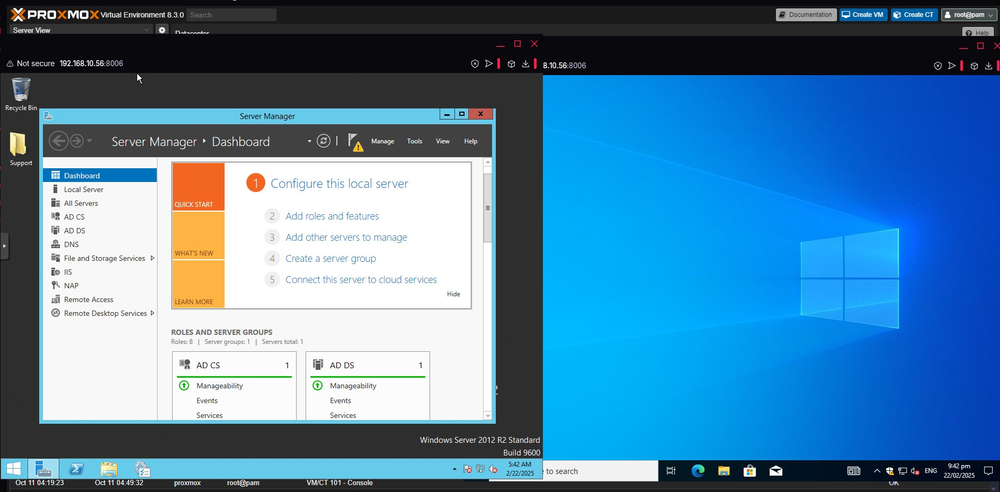

Virtualization Using Proxmox VE
A home lab built on an old PC running Proxmox VE, simulating an enterprise environment with Active Directory.
Overview
I've been diving deeper into virtualization by setting up my own home lab, using my old PC as a hypervisor server running Proxmox. With just two VMs, one running Microsoft Windows Server and the other a Windows client, I've been able to simulate an enterprise environment.
Proxmox is a type 1 hypervisor, and it also has built-in tools to manage virtual computers, take backups, and set up special storage and networking configurations. It's often used in data centers and IT labs. Proxmox VE (Virtual Environment) is a powerful open-source platform for virtualization that lets you run multiple virtual machines (VMs) and containers on a single physical server.
The hardware
This is my refurbished PC, which I got through buy-and-sell.

The web GUI
This is where you manage all the resources of your environment, including physical nodes, virtual machines, containers, storage devices and network configuration. The Proxmox web GUI is a comprehensive, intuitive platform to monitor system performance, allocate hardware resources, configure high availability and clustering, and manage user permissions and backups.

AD DS with Windows Server and a client
I implemented a basic Active Directory Domain Services (AD DS) configuration between two virtual machines in my Proxmox environment to simulate a typical enterprise setup. One VM is the domain controller, running Windows Server, where I installed and configured AD DS, DNS and Group Policy Management. I created a new forest and domain, set up organizational units (OUs), and added user and computer accounts to reflect a structured company hierarchy.
The second VM, acting as a client machine, was joined to the domain to verify connectivity and domain functionality. I successfully tested domain login from the client VM, applied group policies to manage user settings, and ensured name resolution through the DNS role on the domain controller.
This setup allows centralized management, authentication and policy enforcement, laying the foundation for more advanced services like RADIUS, file sharing and role-based access control in future configurations.
